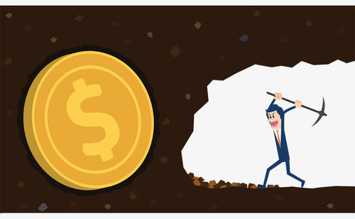

Her
经期饮食
禁忌饮食
通常经期都有哪些饮食禁忌呢？经期有5类食物不能吃！
1.吃咸食
女性在月经来潮前谨记忌食咸食。因为咸食会使体内的盐分和水分贮量增多，在月经来潮之前，孕激素增多，易于出现水肿、头痛等现象。月经来潮前 10 天开始吃低盐食物，就不会出现上述症状。
2.喝含气饮料
有不少喜欢喝含气饮料的女性，在月经期会出现疲乏无力和精神不振的现象，这是铁质缺乏的表现。因为汽水等饮料大多含有磷酸盐，同体内铁质产生化学反应，使铁质难以吸收。此外，多饮汽水会因汽水中碳酸氢钠和胃液中和，降低胃酸的消化能力和杀菌作用，并且影响食欲。
3.吃刺激性食物
| 山楂 | 酸菜 | 食醋 | 辣椒 | 芥末 | 胡椒 |
月经其间的女士感到特别疲劳，消化功能减弱，胃口欠佳，因此，饮食上应注意食物的清淡和易于消化吸收，避免食用过酸和刺激性较大的食品，如山楂、酸菜、食醋、辣椒、芥末、胡椒等。
月经期应吃清淡、味平、富含营养的物质，不宜吃刺激性强的辛辣食物，以免刺激血管扩张，引起月经提前和经量过多。月经期的妇女不宜食用辛辣刺激性食品，否则容易导致痛经、经血过多等症。
4.吃辛辣生冷食物
| 螃蟹 | 田螺 | 竹笋 |
辛辣生冷的食物有刺激性，容易引起盆腔血管收缩而引起经血量过少甚至突然停止。另外，烟酒等刺激性物质对月经也会有一定影响，如果不注意避免这些不良刺激，长此以往，会发生痛经或月经紊乱。 月经期间吃生冷食物会不仅会引发痛经还会对身体造成伤害。另外，像螃蟹、田螺、竹笋等寒性食物也忌吃。
5.吃乳酪类食物
| 牛奶 | 起司 | 奶油 | 酵母乳 | 鸡蛋 |
乳酪是痛经的祸源。牛奶、起司、奶油、酵母乳、鸡蛋等食物会破坏镁的吸收，引起痛经。
经期饮食习惯
| 豆类 | 鱼类 | 绿叶蔬菜 | 水果 | 多饮水 |
| 全谷类 | 全麦面 | 糙米 | 燕麦 | 核桃 |
| 腰果 | 乾豆 | 肉类 | 豆腐 | 菠菜 |
| 蜜枣 | 红菜 | 葡萄乾 |
1.月经来潮前的一周饮食宜清淡，易消化，富营养。可以多吃豆类，鱼类等高蛋白食物，并增加绿叶蔬菜，水果，也要多饮水，以保持大便通畅，减少骨盆充血。
2.多吃高纤维食物，如：蔬菜、水果、全谷类、全麦面、糙米、燕麦等食物。摄入足够的高纤维食物，可促进动情激素排出，增加血液中镁的含量，可调整月经和镇静神经。
3.两餐之间吃一些核桃、腰果、乾豆等富含维生素B群的食物。
4.摄取足够的蛋白质。可吃白色肉类;及多些豆腐、黄豆植物蛋白，以补充经期所流失的营养素。
5.饮食应定时定量。可避免血糖一下升高、一下降低，减少心跳加速，缓解头晕、疲劳、情绪不稳定等不适。
6.有大失血情形的女性，应多摄取菠菜、蜜枣、红菜(汤汁是红色的菜)、葡萄乾等高纤质食物，以利补血。
7.即将面临更年期的妇女，应多摄取蔬菜等钙质丰富的食品。
推荐饮食
| 红枣 | 瘦肉 | 排骨汤 | 鸡汤 | 瓜果蔬菜 | 花生 |
| 核桃 | 腰果 | 鸡肝 | 猪肝 | 猪血 | 红糖水 |
一般痛经或是因为吃了生冷食物，或因外受寒潮，或因气血失调，气机不畅，血行受阻。因湿热蕴结，肝郁气滞所致者，常伴有食欲不振、烦躁、倦怠、面色苍白等表现。在发作时，宜治标止痫，待疼痛减轻，以 预防为主 才能达到较好的治疗效果。那么有什么食物可以缓解痛经呢？
1.姜枣红糖水
- 材料：干姜、大枣、红糖各30克。
- 作法：将前两味洗净，干姜切碎末，大枣去核，加红糖煎，喝汤，吃大枣。
- 功效：具有温经散寒功效。适用于寒性痛经以及黄褐斑。
2.韭汁红糖
- 饮材料：鲜韭菜300克，红糖100克。
- 作法：将鲜韭菜洗净，沥干水分，切碎后捣烂取汁备用。红糖放入铝锅内，加清水少许煮沸，至糖溶后 兑入韭菜汁内，即可饮用。
- 功效：具有温经、补气之功效。适用于气血两虚型之痛经，并可使皮肤红润光洁。
3.姜汁薏苡仁粥
- 材料：干姜10克，艾叶10克，薏苡仁30克。
- 作法：将前两味水煎取汁，将薏苡仁煮粥八成熟，入姜、艾汁同煮至熟。
- 功效：具有温经、化瘀、散寒、除湿及润肤功效。适用于寒湿。